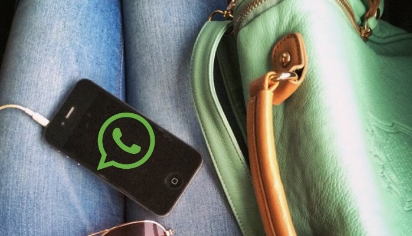

If you jumped on the blackberry bandwagon back in the day, chances are that BBM (Blackberry Messenger) was your preferred mode of communication. Along came WhatApp, and the rest is history. I assumed that this narrative was universal. Enter week-one of my Masters: a whirlwind of new faces and phone numbers. I instinctively searched for my new contacts on WhatsApp to send out the customary ‘this is my number/lets stay connected’ message. Surprisingly, many of them were not on WhatApp, while others had been ‘last seen’ on WhatsApp 2 or 3 days ago. In incessant-technology-user lingo, that’s light years!. Living away from home, WhatsApp has become somewhat of a lifeline, whether it is for communicating with friends or family. I didn’t even send out my London number to those back home, since I continued to use my registered Indian number on Whatsapp. For those familiar with the platform, having a ‘WhatsApp’ number is not an unusual phenomenon. But, not using WhatsApp? That’s absurd
Speaking of absurdities, India’s WhatsApp users are accustomed to many of them on a daily basis. From middle-aged men and housewives, to taxi drivers and domestic help, there’s an avalanche of jokes, political propaganda, and ‘motivational’ quotes that recirculate among networks. pornography also features in this mix. To know about whatsApp worries you can entre in LITTLE BACK DOOR.Then come the groups, which become the primary source of communication within personal networks. From family members, and
colleagues, to school friends and semi-friends, there’s a WhatsApp group for everything. A group that my high school friends and I use to communicate recently completed 3 years
But WhatsApp is increasingly moving beyond a personal messaging platform to a form of social media. Firstly, the ‘broadcast’ feature, which allows you to send a message to all your WhatsApp contacts at the click of a button, makes it easy to disseminate information within your networks. Indian politicians are making use of this feature to reach out to voters in their area, by purchasing area-wise WhatsApp databases
Secondly, the group-messaging feature is becoming more commonplace in professional life, even replacing the need for emails in certain instances. My last workplace had separate WhatsApp Groups for each client. A friend who worked on the 2015 Delhi Election was also part of several WhatsApp groups used to coordinate different volunteers across assembly constituencies.
I’ve been curious about what makes WhatsApp so popular in India. The efficiency factor is hard to ignore. It’s quick, and convenient. However, that only tells part of the story, since clearly it’s not equally popular across societies. For instance, WhatsApp Penetration remains much lower in countries such as the United Kingdom (34%) and United States (8%) than in India (69%). But it’s not a classic case of ‘East v/s West’ or the Global South v/s North. Germany, Spain, Italy and the Netherlands have a significantly high WhatsApp penetration (50%+). But the data doesn’t lend itself to a geographical explanation either. For one, France’s WhatsApp penetration is only 8%. Among Asian countries too there is also a significant discrepancy between Indonesia, Malaysia, and Singapore that have a higher adoption rate as compared to Japan, Philippines, and Thailand, which lie at the lower end of the spectrum.